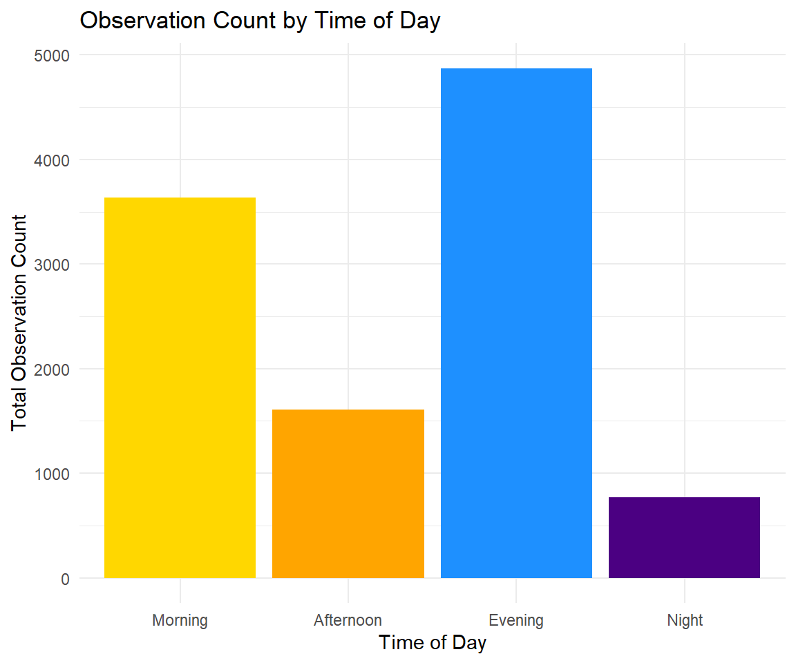
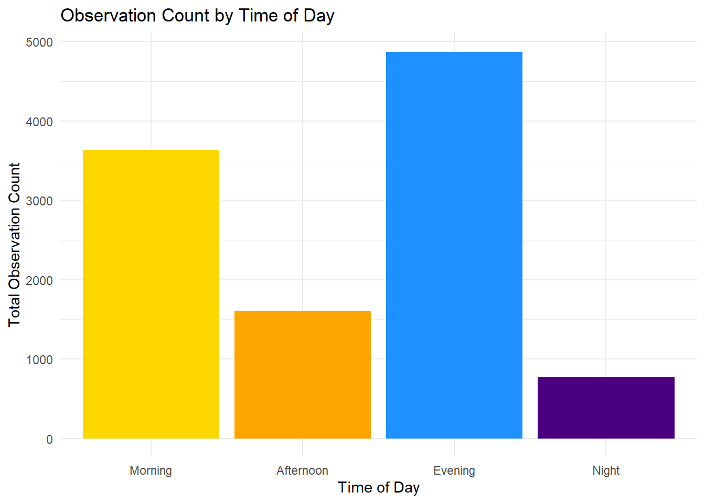

Data copied from data_wrangling…
amwo <- "data/ebd_US-NY_amewoo_201901_202401_smp_relSep-2024.txt"
amwo_samp <- "data/ebd_US-NY_amewoo_201901_202401_smp_relSep-2024_sampling.txt"
observations <- read_ebd(amwo)
checklists <- read_sampling(amwo_samp) # the 600MB file will take a while to load
checklists_shared <- read_sampling(amwo_samp, unique = FALSE)
checklists_shared |>
filter(!is.na(group_identifier)) |>
arrange(group_identifier) |>
select(sampling_event_identifier, group_identifier)## # A tibble: 499,631 × 2
## sampling_event_identifier group_identifier
## <chr> <chr>
## 1 S133795590 G10000026
## 2 S133795510 G10000026
## 3 S133796607 G10000075
## 4 S133796609 G10000075
## 5 S133796610 G10000075
## 6 S133796860 G10000119
## 7 S133796859 G10000119
## 8 S133796979 G10000122
## 9 S133796980 G10000122
## 10 S133797306 G10000134
## # ℹ 499,621 more rowschecklists_unique <- auk_unique(checklists_shared, checklists_only = TRUE)
checklists <- checklists |>
filter(all_species_reported)
observations <- observations |>
filter(all_species_reported)
observations <- observations %>%
filter(checklist_id %in% checklists$checklist_id)…of American Woodcock in NY
Select and add some useful variables from observations.
observations_selected <-
observations |>
select(county, observation_count, county, locality_type, latitude, longitude,
observation_date, time_observations_started, protocol_type, duration_minutes,
effort_distance_km, number_observers) |>
filter(observation_count != "X") |>
mutate(
observation_count = as.numeric(observation_count),
year = lubridate::year(as.Date(observation_date)),
month = lubridate::month(as.Date(observation_date)),
day = lubridate::day(as.Date(observation_date)),
season = case_when(
month %in% c(12, 1, 2) ~ "Winter",
month %in% c(3, 4, 5) ~ "Spring",
month %in% c(6, 7, 8) ~ "Summer",
month %in% c(9, 10, 11) ~ "Fall"),
time_of_day = case_when(
as.numeric(format(as.POSIXct(time_observations_started, format = "%H:%M:%S"), "%H")) >= 5 &
as.numeric(format(as.POSIXct(time_observations_started, format = "%H:%M:%S"), "%H")) < 12 ~ "Morning",
as.numeric(format(as.POSIXct(time_observations_started, format = "%H:%M:%S"), "%H")) >= 12 &
as.numeric(format(as.POSIXct(time_observations_started, format = "%H:%M:%S"), "%H")) < 17 ~ "Afternoon",
as.numeric(format(as.POSIXct(time_observations_started, format = "%H:%M:%S"), "%H")) >= 17 &
as.numeric(format(as.POSIXct(time_observations_started, format = "%H:%M:%S"), "%H")) < 21 ~ "Evening",
TRUE ~ "Night")
)Does the season affect the activity of woodcocks?
observations_selected <- observations_selected |>
mutate(season = factor(season, levels = c("Winter", "Spring", "Summer", "Fall")))
season_summary <- observations_selected |>
group_by(season) |>
summarise(total_observation_count = sum(observation_count, na.rm = TRUE))
ggplot(season_summary, aes(x = season, y = total_observation_count, fill = season)) +
geom_bar(stat = "identity") +
scale_fill_manual(values = c("Winter" = "#56B4E9",
"Spring" = "#009E73",
"Summer" = "#F0E442",
"Fall" = "#E69F00")) +
labs(
title = "Observation Count of Woodcocks by Season in NY",
x = "Season",
y = "Total Observation Count"
) +
theme_minimal() +
theme(legend.position = "none")
The total observation count in Spring in NY is significantly higher than in any other season…
When do American woodcocks usually appear?
observations_selected <- observations_selected |>
mutate(time_of_day = factor(time_of_day, levels = c("Morning", "Afternoon", "Evening", "Night")))
# Summarize observation counts by time of day
time_summary <- observations_selected |>
group_by(time_of_day) |>
summarise(total_observation_count = n())
# Create the plot
ggplot(time_summary, aes(x = time_of_day, y = total_observation_count, fill = time_of_day)) +
geom_bar(stat = "identity") +
scale_fill_manual(values = c(
"Morning" = "#FFD700",
"Afternoon" = "#FFA500",
"Evening" = "#1E90FF",
"Night" = "#4B0082"
)) +
labs(
title = "Observation Count by Time of Day",
x = "Time of Day",
y = "Total Observation Count"
) +
theme_minimal() +
theme(legend.position = "none")
Are the difference significant?
kruskal_test <- kruskal.test(observation_count ~ time_of_day, data = observations_selected)
# Extract test results
kruskal_result <- data.frame(
Statistic = round(kruskal_test$statistic, 3),
Degrees_of_Freedom = kruskal_test$parameter,
P_Value = format.pval(kruskal_test$p.value, digits = 3, scientific = TRUE)
)
# Save results as a nice table
kruskal_result %>%
kbl(caption = "Kruskal-Wallis Test Results") %>%
kable_classic(full_width = FALSE, html_font = "Times")| Statistic | Degrees_of_Freedom | P_Value | |
|---|---|---|---|
| Kruskal-Wallis chi-squared | 1298.153 | 3 | <2e-16 |
There is strong evidence that the observation counts differ significantly across the time periods (Morning, Afternoon, Evening, Night).